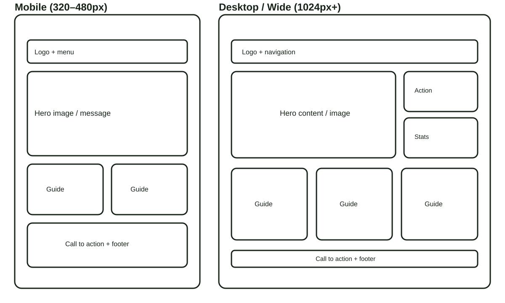

Website Planning Document — Week 05
GrowWell Farm Technologies Site Plan
This plan defines the brand, purpose, audience scenarios, color system, typography, and responsive Home-page structure for the GrowWell agriculture website.
1. Site Name
GrowWell Farm Technologies — practical digital field guides for small growers.
Reason: The name communicates healthy growth and useful technology. It creates a memorable, welcoming identity for growers looking for modern but practical farming guidance. Suggested domain: growwellfarm.tech.
2. Site Purpose
GrowWell Farm Technologies provides a digital library of practical agriculture guidance for small growers. Visitors can explore crop, soil, water, protection, and planning resources; open detailed guide information; save useful guides for later; and contact the team with farming questions.
3. Visitor Scenarios
- Which guide can help me use water efficiently during a dry season?
- How can I find simple, sustainable ways to protect vegetable crops?
- Can I save useful growing guides and return to them later?
4. Color Scheme
The following accessible colors are used throughout this site-plan document and the completed website.
Headings, navigation, primary buttons, and footer.
Logo mark and high-energy calls to action.
Warm process accents and highlights.
Calm supporting section backgrounds.
5. Typography
Fraunces is used for expressive page headings and the brand style. Manrope is used for navigation, labels, and compact headings. DM Sans is used for readable body copy, forms, and guide data. These Google Fonts are loaded and used on this plan and throughout the completed website.
6. Home Page Wireframes
The supplied wireframe documents the responsive Home-page layout. On mobile, content stacks into one clear vertical flow. On wider screens, the hero becomes a two-column arrangement and guides display in a three-column grid.

7. Testing and Next Steps
The completed project will be checked with HTML and CSS validation, Lighthouse, and DevTools contrast tools. Week 06 work includes the responsive Home, About Us, and Contact pages; field-guide JSON data; local storage; modal dialogs; and form interactivity.